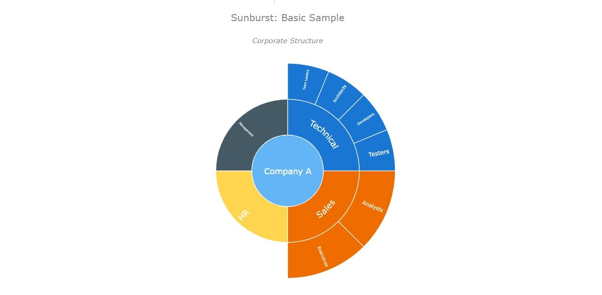

Population Sunburst Chart Tutorial Page
Visualisation Source
For this solution, we chose to visualise the global population data in a sunburst chart. A sunburst chart, otherwise known as a radial treemap or multi-level pie chart, is a visualization that displays hierarchically organized data as a set
of nested rings (the top level of the hierarchy is shown in the center). Rings are divided into slices that represent data points, for our visualisation, the sizes of slices represent the values.
We decided to use
Anychart, flexible JS and HTML5 based visualisation library with many types of lightweight charts readily available. To use the Sunburst chart we first had to add the core and
sunburst modules.
<script src="https://cdn.anychart.com/releases/v8/js/anychart-core.min.js"> <script>
<script src="https://cdn.anychart.com/releases/v8/js/anychart-sunburst.min.js"> <script>

Manipulating the data
The API we chose to get population data from was Restcountries, a restful API which allows users to request information about countries. I thought this was the most appropriate API as it includes endpoints
for region which allows data to be separated in a way that would facilitate gathering the data and getting it onto the sunburst chart, which needs data at bottom-level (countries), to have a root (regions)
Firstly, to request the data I used AJAX. Ajax is short for Asynchronous JavaScript and XML and its often used in client side programming to allow data to be sent and received from a database.
For each continent/region I created a new get request to the Restcountries API.
The example above is a simple demonstration of how jQuery and Ajax can be used. A request is made to the specified URL. We then take the result, and insert the data into arrays which will later be inserted onto the chart.
Creating chart an inserting data
To ensure that all the ajax requests are completed before the chart is initiated, I create a new $(document).ajaxStop(function() which insures that this function is only called once all the data I want ready is loaded. Since this is a "parent-dependent"
sunburst chart, each data item must contain a name and a value, as seen in the previous "Asia" array. To initiate the Sunburst chart, I had to use the anychart.sunburst() constructor as outlined in the documentation.
The "parent-dependent" calculation mode is used to compare elements by their values in case only some of the elements in each category are shown, while others are omitted (or when data is incomplete). In this mode the sizes of nodes depend on their values,
so the value data field is required. The Total values for each region were calculated by adding each value and stored in an object as seen in a previous example. The total population value was a sum of all region values.
Finished visualisation
Other sources